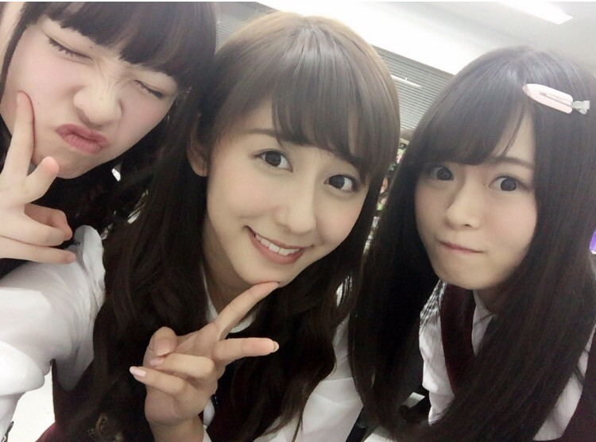
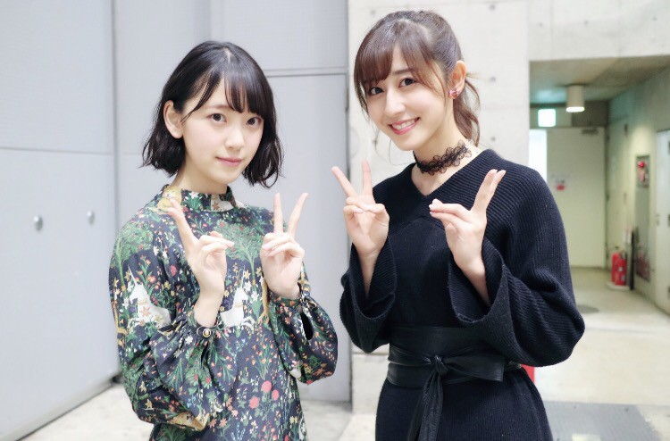

| 2017/03 20 Mon | 斎藤ちはる 春の訪れ |
今日は春分の日。
昼と夜の時間がほとんど同じになる日です！
春分の日が来ると冬の終わりと
春の訪れを感じられますね〜
ちはるという名前の通り春は好きです！
大好きな桜も咲く季節ですし、
お洋服も可愛いし、
なによりとても過ごしやすい！
(花粉症の方以外は...)
みなさん、三連休は
どのようにお過ごしでしたか〜(﹡ˆ ˆ﹡)？

みりあとれなちとの懐かしい〜写真。
１年半くらい前の気がする！
この時はまだみりあは全然
懐いてきてくれてなかったな〜笑
今では見かけると必ず
「あ！ちはるさんだ〜ヾ(*･∀･*)ﾉﾞツンツン」
ってされます。笑

みおなと。
私、みおなが本気で笑った時の
高らかな笑い声が大好き！！笑
つられて笑っちゃうの。
それが楽しい！
今日は二期生との写真を載せてみました〜◎
仲良くなれて良かったな☺︎
------------------------------------------------♡
♬ ChihaMusic
「チェリー」スピッツさん
春らしい曲を選択してみました◎
スピッツさんは春の曲が多い！
今の季節にぴったり〜
聞きたくなるね！
そしてこの曲も卒業ソングに
通づるところがある気がする...
みんなでカラオケで歌ったら
心に残りそうだね☺︎
"君を忘れない 曲がりくねった道を行く
きっと 想像した以上に
騒がしい未来が 僕を待ってる"
この歌詞が好き〜
騒がしい未来っていうのが
どこかワクワクしてくる。
そういえば桜が３本咲いたそうです◎
桜の季節がもうすぐだ...♡
今日もChihAnswer募集します！
聞きたいこと何でもどうぞ。
待ってます！
おやすみ
斎藤ちはる